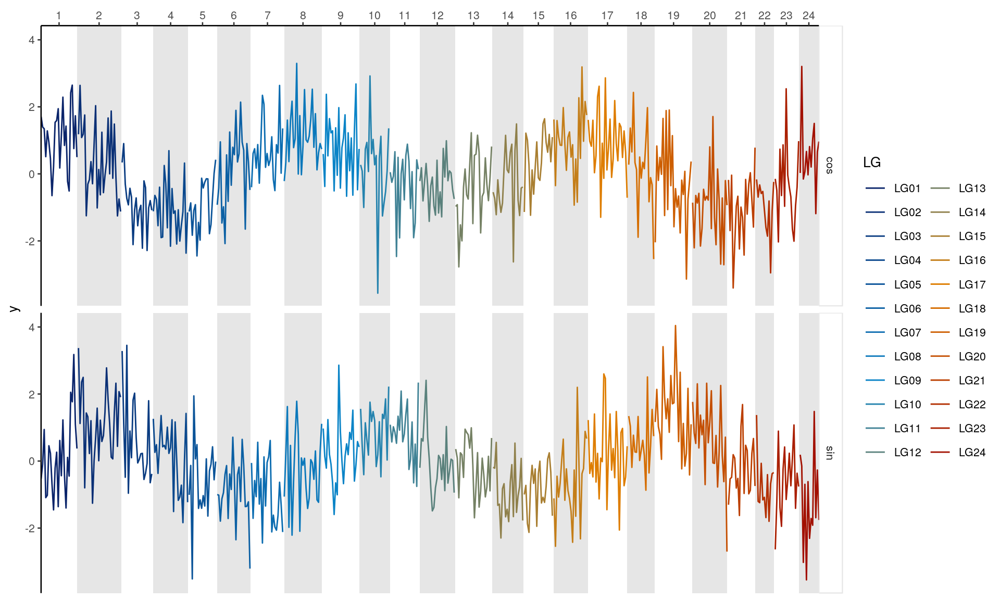

The hypogen package
Kosmas Hench
2019-03-03
hypogen_basics.RmdAbout the package:
The hypogen package helps with population genetic analysis based on the hamlet reference genome (Hypoplectrus puella). It contains two functions to import population genetic statistics as produced by e.g. VCFtools (hypo_import_snps() & hypo_import_windows()) in the context of the hamlet genome. Furthermore it provides one template for genome wide plots (geom_hypo_LG()) and one template to set statistics into the context of the genome annotation (hypo_annotation_baseplot()).
In addition to this the package contains a few helpers for a consistent plot layout. More artistic aspects of hamlet analysis plots are provided within the hypoimg package.
Installation
Using the devtools package, hypogen can be installed directly from github:
devtools::install_github("k-hench/hypogen")Importing Data
# SNP data
file_snps <- system.file("extdata", "example.weir.fst.gz", package = "hypogen")
data_snps <- hypo_import_snps(file = file_snps, gz = TRUE) %>%
mutate(window = 'bolditalic(F[ST])')
# Window data
file_windows <- system.file("extdata", "example.windowed.weir.fst.gz", package = "hypogen")
data_windows <- hypo_import_windows(file = file_windows, gz = TRUE) %>%
mutate(window = 'bolditalic(F[ST])')The basic genome wide plot
Ploting a certain statistic over the whole genome is a frequent issue. An example for this is the running average of FST.
Assume we have a dataset containing to variables measure along the genome:
test_df <- tibble(x=rep(seq(1,max(hypo_karyotype$GEND),length.out = 500),2)) %>%
mutate(CHROM = hypo_which_CHROM(x),grp = rep(c('sin','cos'), each = 500),
y = ifelse(grp=='sin',sin(x/200000000*2*pi),cos(x/200000000*2*pi+.2))+rnorm(1000))
test_df %>% head
#> # A tibble: 6 x 4
#> x CHROM grp y
#> <dbl> <chr> <chr> <dbl>
#> 1 1 LG01 sin -0.529
#> 2 1121543. LG01 sin -0.102
#> 3 2243086. LG01 sin 0.940
#> 4 3364628. LG01 sin -1.09
#> 5 4486171. LG01 sin -1.02
#> 6 5607713. LG01 sin 0.456ggplot() +
geom_hypo_LG() +
geom_line(data=test_df,aes(x=x,y=y,col=CHROM)) +
scale_fill_hypo_LG_bg() +
scale_x_hypo_LG() +
scale_color_hypo_LG() +
facet_grid(grp~.)+
theme_hypo()
The annotation plot
XR <- c(10000,50000)
test_df_2 <- tibble(x=rep(seq(XR[1],XR[2],length.out = 200),2)) %>%
mutate(window = rep(c('bold(hyp_sin)','bold(hyp_cos)'), each = 200),
y = ifelse(window == 'bold(hyp_sin)',
sin(x/XR[2]*20*pi),
cos(x/XR[2]*20*pi+.2)) + rnorm(400))hypo_annotation_baseplot(searchLG = "LG01", xrange = XR,
genes_of_interest = "TSEN34",
genes_of_sec_interest = "Serp1") +
geom_point(data = data_snps, aes(x = POS, y = WEIR_AND_COCKERHAM_FST),
color = 'lightgray') +
geom_line(data = data_windows, aes(x = POS, y = WEIGHTED_FST),
color = viridis::inferno(5)[4]) +
coord_cartesian(xlim = XR) +
facet_grid(window~.,scales='free_y',
switch = 'y',labeller = label_parsed) +
scale_color_manual(values = c('black','gray',viridis::inferno(3)),
guide = FALSE) +
scale_fill_manual(values = viridis::inferno(3),
guide = FALSE) +
scale_x_continuous(name = "Hypo AnnoPlot Title",
expand = c(0,0),position = 'top') +
theme_hypo() +
theme_hypo_anno_extra()
#> Warning in .get_version_from_pragmas(pragmas): unrecognized GFF version
#> specified in the file